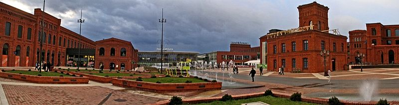
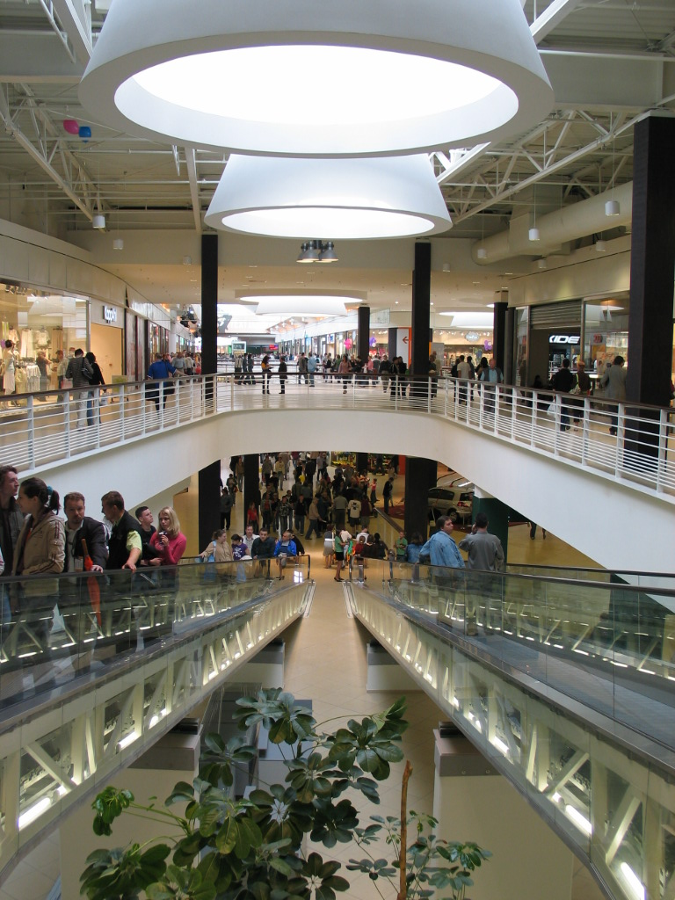
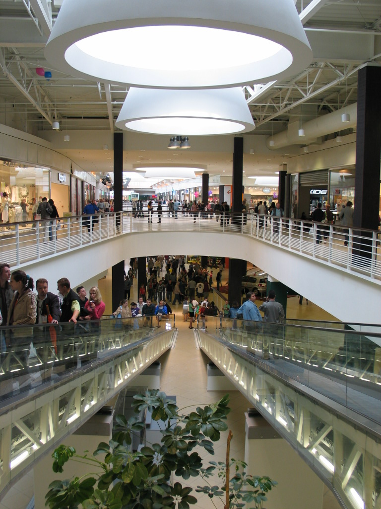
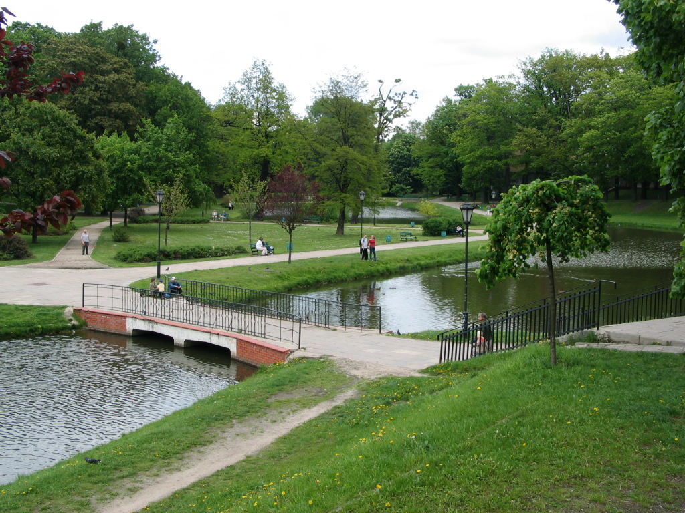
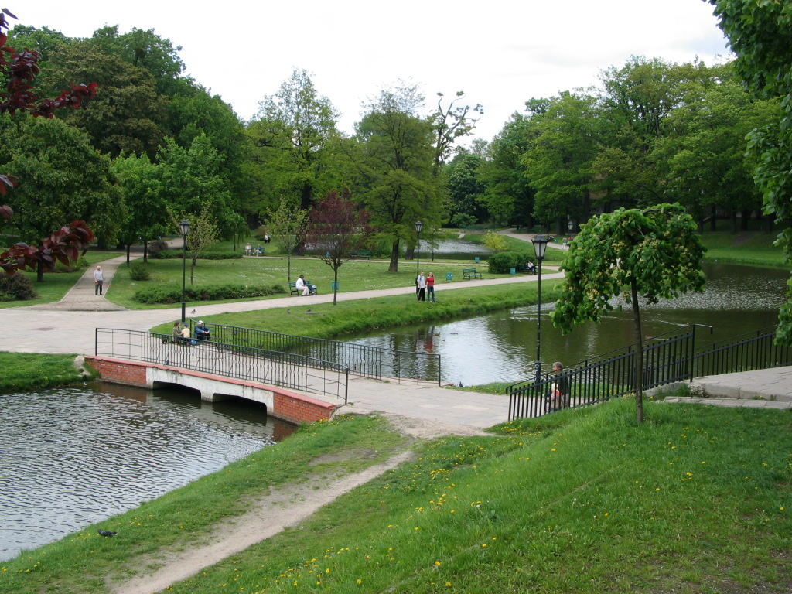

a
Łódź
Ulica Piotrkowska
-Jedna z najbardziej znanych ulic w kraju a jednocześnie najdłuższy polski deptak stanowi wizytówkę miasta. Reprezentacyjna ulica Łodzi, jedna z najdłuższych ulic handlowych w Europie licząca ok. 4,2 km, biegnąca południkowo w linii prostej, pomiędzy pl. Wolności a pl. Niepodległości.
-Wzdłuż ulicy spotkać można wiele niezwykłych kamienic z przełomu XIX i XX wieku. Niespotykane są też podwórka, w których kryje się wiele historii, ale i punktów usługowych i gastronomicznych. Piotrkowska przyciąga łodzian i turystów niepowtarzalnym klimatem o każdej porze dnia i roku.
"
Autorstwa Motacilla - Praca własna, CC BY-SA 4.0, https://commons.wikimedia.org/w/index.php?curid=37702957

By Zorro2212 - Own work, CC BY-SA 4.0, https://commons.wikimedia.org/w/index.php?curid=43410891
-Festiwal świateł na ulicy Piotrkowskiej


Autorstwa Zorro2212 - Praca własna, CC BY-SA 4.0
Autorstwa Zorro2212 - Praca własna, CC BY-SA 4.0
https://commons.wikimedia.org/w/index.php?curid=44475082
https://commons.wikimedia.org/w/index.php?curid=36191515
Centrum Handlowe Manufaktura
-Centrum handlowo-usługowo-rozrywkowe, otwarte 17 maja 2006 roku. Centrum powstało na terenach dawnej fabryki Izraela Poznańskiego w Łodzi, jednego z największych fabrykantów łódzkich.
-Przebudowa dawnej fabryki została tak wykonana, aby częściowo zachować dawną atmosferę tego miejsca. Dominują tu zatem stare, pofabryczne budynki z czerwonej, nieotynkowanej cegły, które zostały jednak całkowicie przebudowane wewnątrz. Zamysł wpisuje się w rewitalizacyjne działania, popularne w miastach o przeszłości przemysłowej – mające na celu zachować atmosferę urbanistyczną z przeszłości z nowoczesnym zastosowaniem budowli.
W Manufakturze poza sklepami znajdują się m.in.:
-Centrum rozrywki i rekreacji (w tym kino z 15 salami, w tym jedna z trójwymiarowym ekranem 3D, kręgielnia, sztuczna ściana wspinaczkowa (10,5 m wysokości, 28 stanowisk z linami, ponad 50 tras wspinaczki o różnym stopniu trudności), fitness klub i skate park.
-Kompleks kulturalny (oddział Muzeum Sztuki, Kinderplaneta, Muzeum Historii Miasta Łodzi, Muzeum Fabryki, Experymentarium – zalążek muzeum techniki, a także Międzynarodowe Centrum Promocji Mody).
-Kompleks ok. 60 restauracji i kawiarni.
-Centrum samochodowe.
Autorstwa Autor nie został podany w rozpoznawalny automatycznie sposób. Założono, że to Michał Oziębło (w oparciu o szablon praw autorskich). - Źródło nie zostało podane w rozpoznawalny automatycznie sposób. Założono, że to praca własna (w oparciu o szablon praw autorskich)., CC BY 2.5, https://commons.wikimedia.org/w/index.php?curid=868231
Autorstwa Jakub Zasina - Praca własna, CC BY-SA 4.0, https://commons.wikimedia.org/w/index.php?curid=4115641
 

Autorstwa Zorro2212 - Praca własna, CC BY-SA 4.0
Autorstwa Zorro2212 - Praca własna, CC BY-SA 4.0
https://commons.wikimedia.org/w/index.php?curid=44475082
https://commons.wikimedia.org/w/index.php?curid=36191515
Zielona Łódź
Co ciekawe blisko 1/3 powierzchni Łodzi zajmują tereny zielone. Jest wśród nich ponad 30 miejskich parków, w tym 11 zabytkowych objętych opieką konserwatorską, Ogród Botaniczny, Ogród Zoologiczny, liczne skwery itp.
 

Park Poniatowskiego
Park Helenów
Autorstwa Jakub Zasina - Praca własna,
CC BY-SA 4.0, https://commons.wikimedia.org/w/index.php?curid=4098346
Autorstwa HuBar - Łódź,
CC BY-SA 2.5, https://commons.wikimedia.org/w/index.php?curid=798395
Dworzec Tramwajowy Centrum
-Dla łodzian potocznie to Stajnia Jednorożców. Na mapach komunikacyjnych MPK-Łódź symbolizowany jest on znakiem jednorożca. 7 czerwca 2019 roku, w pobliżu dworca odsłonięto pomnik jednorożca (wybudowany w ramach budżetu obywatelskiego), autorstwa japońskiego artysty, Tomohiro Inaby.
Autorstwa Zorro2212 - Praca własna, CC BY-SA 4.0, https://commons.wikimedia.org/w/index.php?curid=44778169